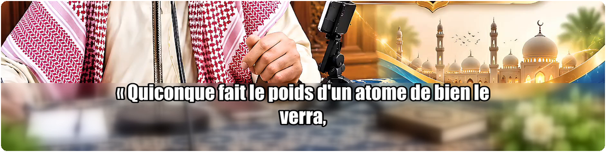
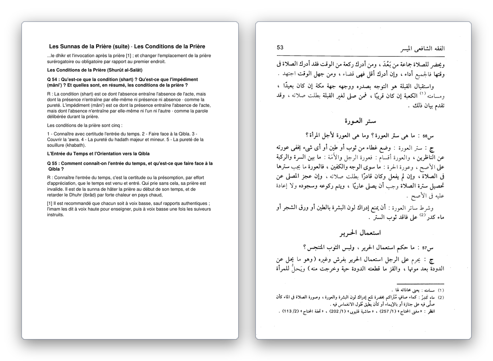

Une chaîne de traduction assistée, de la vidéo au livre imprimable
Une association d'enseignement disposait de dizaines d'heures de cours filmés en arabe et d'ouvrages de référence jamais traduits. Les outils grand public produisaient un texte lisible mais terminologiquement instable : le même terme technique changeait de traduction d'une page à l'autre. J'ai construit un système complet — dépôt en ligne, file d'attente, transcription, traduction en deux passes, relecture humaine et mise en page — articulé autour d'un glossaire métier et d'une mémoire de corrections qui s'enrichissent à chaque relecture.
Traduire n'est pas le problème. Rester cohérent, si.
Faire traduire un paragraphe par un modèle de langue est trivial et quasi gratuit. Le besoin réel était ailleurs, et il se résume à trois difficultés que les traducteurs généralistes ne traitent pas :
La dérive terminologique
Sur 200 pages, un terme technique traduit de quatre façons différentes rend le document inutilisable pour un lecteur qui apprend. Aucun outil grand public ne garantit qu'un terme donné sera rendu de la même manière du début à la fin.
La mise en page bidirectionnelle
Un ouvrage bilingue mêle pages arabes scannées et pages françaises générées, avec des notes de bas de page à réconcilier. L'écriture de droite à gauche casse la plupart des extracteurs de PDF et des moteurs d'OCR.
Le coût et la disponibilité
Traiter des heures de vidéo et des centaines de pages avec une API payante n'était pas tenable pour une association. Il fallait faire tourner le gros du calcul sur une machine déjà possédée, sans sacrifier la disponibilité du service.
Le parti pris
Le système ne remplace pas un traducteur : il fait le travail mécanique et garantit la cohérence, l'humain valide. Toute correction humaine est capturée et réinjectée dans les traductions suivantes — c'est le cœur du projet, et c'est ce qui le rend transposable à n'importe quel domaine à vocabulaire spécialisé (juridique, médical, technique).
Un serveur qui ne calcule rien, un PC qui fait tout
Le VPS coûte quelques euros par mois et n'a ni GPU ni place pour installer PyTorch. Il héberge donc uniquement le site, la file d'attente et les fichiers ; il tourne 24 h/24. Le calcul lourd — transcription, traduction, encodage vidéo — se fait sur un PC de bureau qui vient réclamer du travail via un jeton, la nuit, quand la machine est libre.
Cette séparation est confortable côté coût, mais elle impose une file d'attente qui survit à un worker pouvant disparaître à tout instant : PC éteint, coupure réseau, quota du modèle atteint en plein milieu d'un livre.
Du cours filmé à la vidéo sous-titrée
Cinq étapes, chacune jalonnée sur disque. Une coupure de courant à l'étape 4 ne fait pas recommencer la transcription : le pipeline reprend là où il s'est arrêté, et un batch déjà corrigé n'est jamais repayé.
-
Extraction audio
ffmpegproduit un WAV mono 16 kHz. Le cache n'est réutilisé qu'après comparaison de la durée du WAV et de la vidéo. L'orientation du fichier (portrait ou paysage) décide dès ici de la largeur des lignes de sous-titres. -
Transcription arabe
Whisper
large, forcé en arabe. Les micro-segments sont fusionnés, puis un rapport qualité automatique mesure la couverture, repère les trous de plus de deux secondes et les segments à faible confiance. Sans ce rapport, une transcription amputée de trois minutes passait inaperçue jusqu'à la relecture finale. -
Premier jet — modèle local
Gemma via Ollama, par lots de cinq segments, avec deux segments de contexte de chaque côté : sans ce contexte, une phrase à cheval sur deux segments perdait son sujet. Le glossaire filtré et dix exemples de corrections passées sont injectés dans le prompt.
-
Passe de correction
Les segments sont regroupés par 40 et soumis à un modèle plus fort, chargé de corriger la terminologie et le style — pas de retraduire. Chaque écart entre le brouillon et la version corrigée est capturé comme exemple d'apprentissage.
-
Incrustation
Un filtre
ffmpegdécoupe une bande basse, la floute, la superpose puis y incruste les sous-titres : le texte reste lisible quel que soit l'arrière-plan. Une variante 1080×1920 est générée pour les formats courts.

Sortie brute d'un job
Le SRT français conserve exactement la timeline du SRT arabe : une entrée arabe correspond toujours à une entrée française, ce qui permet de rejouer une correction humaine sans retraduire ni ré-encoder la vidéo.
13 00:01:01,840 --> 00:01:04,040 ar كقوله تعالى fr comme dans Sa parole, le Très-Haut : 14 00:01:04,040 --> 00:01:07,600 ar والعصر إن الإنسان لفي خسر fr « Par le Temps ! L'être humain est, certes, en perdition. »
Durée audio : 17:10 Durée transcrite : 17:01 Couverture : 99.1% Segments : 277 ✅ Aucun trou détecté. ✅ Tous les segments ont une confiance correcte. VERDICT : ✅ QUALITÉ OK
Du scan arabe au PDF bilingue imprimable
La branche livre part d'un PDF dont une partie des pages sont des scans. Elle produit un brouillon page par page, ouvre une interface de relecture, puis réassemble un document final dont la mise en page est intégralement recalculée.
Remettre l'arabe dans l'ordre
Le moteur d'OCR rend les fragments de gauche à droite. Il a fallu les regrouper par ligne, puis trier chaque ligne de droite à gauche — sans quoi les mots arrivaient à l'envers et les notes de bas de page se mélangeaient au corps du texte.
Découper sans perdre un mot
Le texte est découpé en blocs de ~500 caractères, sur une frontière de paragraphe, sinon de phrase, sinon de mot. Un test vérifie qu'aucun mot ne disparaît. Le dernier bloc de la page précédente sert de contexte, pour les phrases à cheval sur deux pages.
Ne jamais tronquer en silence
La fonction de rendu de texte signalait un débordement par une valeur négative, jamais testée : du texte disparaissait silencieusement. Le code essaie désormais cinq tailles de police, puis coupe par dichotomie sur les mots et poursuit sur une page suivante.
Signaler les pages douteuses
Chaque page est notée automatiquement : traduction absente, caractères arabes résiduels, ratio de longueur français/arabe anormal. Le seuil d'omission a été fixé après mesure sur 424 pages validées, pas à l'intuition.

Le bug qui m'a coûté le plus de temps
Chaque page du PDF exporté contenait son texte en double. Le mode de rendu utilisé pour les essais de mise en page signifie « encre invisible », pas « ne rien dessiner » : mes mesures écrivaient réellement dans le document. La correction tient en une ligne — faire les essais sur une page jetable — mais la trouver a demandé de comprendre ce que la bibliothèque faisait vraiment, pas ce que son nom laissait croire.
Un glossaire et une mémoire qui s'améliorent à l'usage
C'est la partie qui distingue ce projet d'un simple appel à un traducteur automatique. Deux actifs sont accumulés au fil des mois et réinjectés dans chaque traduction :
- Le glossaire — des termes validés par un relecteur humain, avec leur translittération et leur traduction retenue. Depuis l'interface de relecture, annoter un mot suffit à l'y ajouter ; un conflit avec une entrée existante est refusé plutôt qu'écrasé.
- La mémoire de corrections — des milliers de triplets source / brouillon rejeté / version retenue. Montrer les deux versions au modèle enseigne la distinction ; ne montrer que la bonne n'apprend qu'un synonyme de plus.
Trois décisions qui font la différence
Sélectionner par pertinence, pas par récence
Piocher les dix dernières corrections dans un corpus de plusieurs milliers, c'est n'en utiliser presque rien. Les exemples sont désormais classés par mots partagés avec le passage en cours de traduction, et le glossaire est filtré de la même façon : seuls les termes réellement présents dans le texte sont envoyés.
Plafonner le contexte en caractères
Un exemple issu d'un livre pèse une dizaine de fois plus qu'un exemple issu d'une vidéo. Sans plafond, dix exemples suffisaient à dépasser la fenêtre du modèle local et à tronquer le prompt en silence — glossaire compris. Un budget de caractères garantit que les consignes arrivent toujours entières.
Traiter la mémoire comme une donnée de production
Un audit a montré qu'une coupure pendant l'écriture pouvait effacer des mois de corrections sans le moindre message. Les fichiers sont maintenant écrits de façon atomique, et un fichier existant mais illisible n'est jamais écrasé : les nouvelles corrections sont mises de côté pour fusion manuelle.
Ce qui compte quand personne ne regarde la console
Le système travaille la nuit, pour des utilisateurs non techniciens. Un échec silencieux coûte une journée ; un « succès » vide coûte la confiance. La plus grande partie du travail d'ingénierie est allée là.
Une taxonomie des pannes
Trois familles d'échecs traitées différemment : authentification (aucun réessai, arrêt immédiat avec un message actionnable), limite d'usage (mise en attente, reprise automatique) et saturation passagère (réessai avec délai croissant). Un « try/except » unique aurait consommé des heures de calcul pour rien.
Reprise à froid
Jalons sur disque, points de reprise par page et par lot, réclamation atomique en base et remise en file des jobs abandonnés depuis plus de six heures. Un livre interrompu à la page 180 repart de la page 180.
Refuser de livrer un succès vide
Le worker vérifie la présence du livrable avant d'annoncer une réussite. Une erreur interne convertie en texte et livrée comme un résultat valide est le pire scénario pour un utilisateur qui ne lit pas l'arabe.
Exploitation
Comptes nominatifs, mots de passe hachés, limitation des tentatives de connexion, HTTPS automatique, services durcis. Sauvegarde quotidienne chiffrée, relue et déchiffrée pour vérification avant d'être conservée, plus purge automatique du disque.
L'ensemble est couvert par 310 fonctions de test : routes et permissions, transitions d'états de la file, parsing des réponses des modèles, découpe en blocs, réordonnancement de l'OCR, gestion des quotas, export PDF. La reconstruction complète du serveur est scriptée et documentée — elle a servi pour de vrai, après une suppression accidentelle sans sauvegarde.
Outils et technologies
| Domaine | Choix |
|---|---|
| Backend | Python 3.12, FastAPI, uvicorn, Jinja2, sessions signées |
| Données | SQLite (sans ORM), fichiers de jobs sur disque, écritures atomiques |
| IA | Whisper large (transcription), Gemma via Ollama en local (1er jet), modèle distant en passe de correction |
| Documents | PyMuPDF, EasyOCR (arabe), reshaping & bidi, polices Unicode embarquées |
| Média | ffmpeg / ffprobe, filtres de flou et d'incrustation, recadrage vertical |
| Infrastructure | Ubuntu, Caddy (HTTPS automatique), services et minuteries systemd, sauvegardes GPG |
| Qualité | pytest (310 fonctions de test), audit technique documenté, grille d'évaluation de traduction |
Ce que j'en retire
Le plus intéressant dans ce projet n'a pas été de brancher des modèles, mais de construire ce qui les entoure : une file d'attente qui tolère un worker absent, une mémoire qui ne s'efface pas, des pannes qui se distinguent les unes des autres et des contrôles qui disent quand ne pas faire confiance au résultat.
Rien de tout cela n'est propre au domaine traité. Le même système — glossaire validé humainement, mémoire de corrections, deux passes de traduction, contrôle qualité par page — s'applique tel quel à un corpus juridique, technique ou médical. C'est ce que je retiens de plus réutilisable : la valeur n'est pas dans le traducteur, elle est dans la boucle de retour qui l'entoure.
Le projet reste un outil interne : le code n'est pas public et l'accès au service est réservé aux membres de l'association. Je peux en revanche présenter l'architecture, le code et les décisions techniques en détail lors d'un entretien.
Envie d'en discuter ?
Je peux détailler n'importe quelle partie de ce système — l'architecture, la gestion des pannes, l'OCR bidirectionnel ou la boucle d'apprentissage.